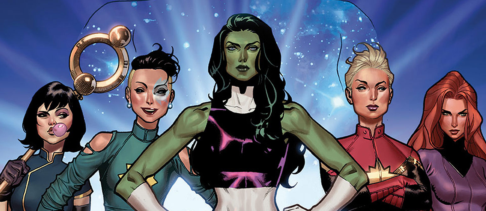
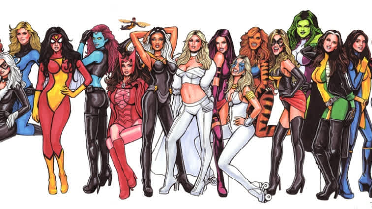
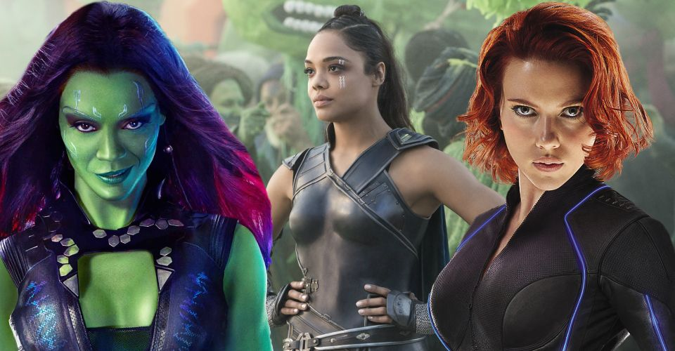

The Women in Marvel
This website explores information regarding Women in the Marvel Universe.
Kamala
Medusa
Valkryie
Psylocke
Singularity
Dazzler
Carol Danvers
Dani Moonstar
Gamora
Black Widow
-

About
See what this website has to view about the wonderful women in Marvel. From new to old generations, the universe is adpating to contain more feminism and women in lead roles. Each generation becoming stronger and more powerful than the next and becoming more diverse.
Stay here -

The Women
View all the Current Women in the Marvel Unviverse, with photos and a short description. These women represent new and old forces that are leading the way for a more female lead Marvel Universe. From Capatian Marvel to Miss America, see how the unvierse is envoling in younger generations.
Women Page -

The Future
Find infomration regarding the future of women in Marvel and the upcoming movies and women joining the universe. There is a new wave of women joining the universe these next two years. From teenagers to long standing cast members, the women are taking over and becoming more diverse.
Future Page -

Timeline
See a timeline of the evolution of women in Marvel Movies stemming from the 1980s to present day. The Women of the Marvel Universe have expanded immensely to include stronger female leads in leading roles. From sidekicks to fierce main characters, the Marvel Universe is becoming more female based.
Timeline Page